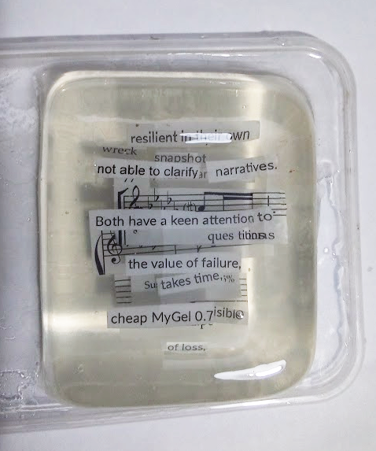

xyh tamura
cut documents, gelatin

A poem set in four layers of clear gelatin. The text is cut from documents and suspended so that each layer stays partly transparent to the one behind it.
Below, you can parse the virtual block the way the physical one is parsed. The layer above lifts away quickly; what is underneath clarifies slowly, the way it does in the jelly.
traverse layers